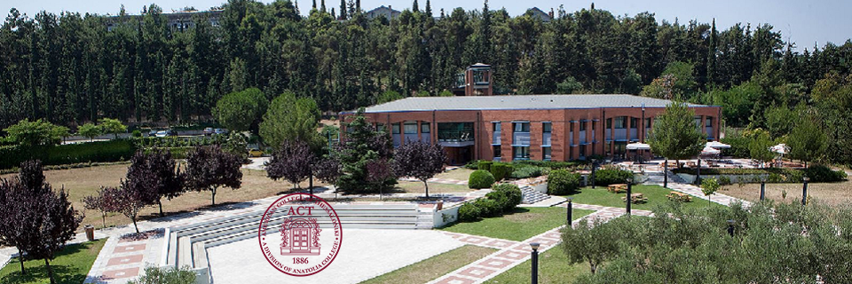

Acasă
Acasă Țări
Țări Catalog
Catalog Galerie foto
Galerie foto Experiente
Experiente Despre
DespreAmerican College of Thessaloniki



Descriere
American College of Thessaloniki (ACT) este o subdiviziune a Anatolia College din Salonic, Grecia. Colegiul este singura instituție școlară din partea de nord a țării, acreditată de New England Association of Schools and Colleges (NEASC), care apreciază calitatea actului de predare al unora dintre cele mai bune universități din SUA precum Yale și Harvard. O parte dintre programele din sfera afacerilor și relațiilor internaționale sunt acreditate de University of Wales din Marea Britanie, ceea ce înseamnă că îndeplinește cerințele directivei europene privind recunoașterea calificărilor profesionale. ACT dispune de un campus modern, unde studiază studenți din peste 30 de țări. Pe lângă faptul că pot cunoaște Grecia și istoria sa antică, studenții au posibilitatea să se integreze într-un mediu multicultural și să-și dezvolte diverse aptitudini grație programului bogat de seminarii, cluburi de interese, excursii organizate și inițiative de binefacere. Colegiul oferă opţiuni de cazare şi în afara campusului, în locuinţe individuale, situate chiar în centrul Salonicului. În semestrul de toamnă și primăvară școala asigură transportul cu autocarul până în campus și înapoi. ACT dispune de un sistem de burse complex. Acceptul se face pe baza mediei generale obținută de student dar și în funcţie de termenul de aplicare. Acest lucru înseamnă că depunerea din timp a documentelor crește șansele unei finanțări, care în unele cazuri acoperă până la 70% din cheltuielile de școlarizare. Pentru a-și păstra bursa, studentul trebuie să aibă rezultate bune pe toată durata studiilor. Este prevăzut și un număr limitat de burse pentru cei mai buni masteranzi, ce acoperă între 50 - 60% din taxă.
Informații generale
Tara: Grecia
Limba de predare: engleza
Ani de studiu: Bachelor: 4
Inceput an: septembrie, martie
Burse: Da
Campusuri: Salonic
Aeroporturi: Salonic
Cazare: 150-250 euro
Programe universitare:
Business Administration, cu specializare în:
Finance
International Business
Management